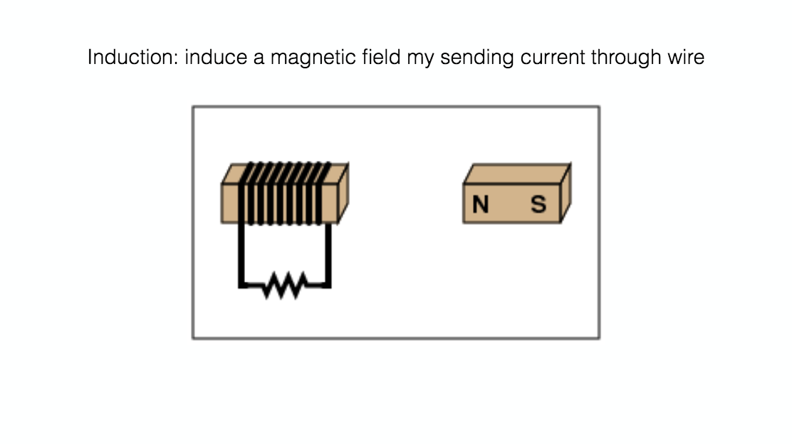
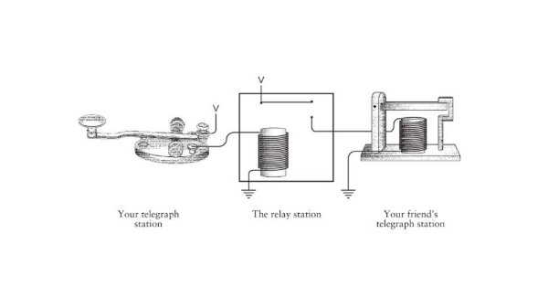
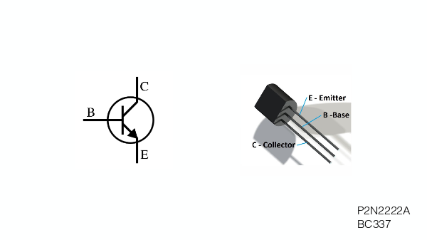
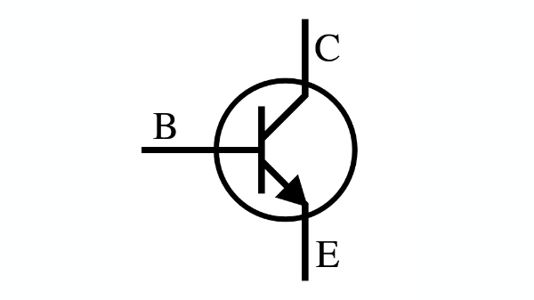
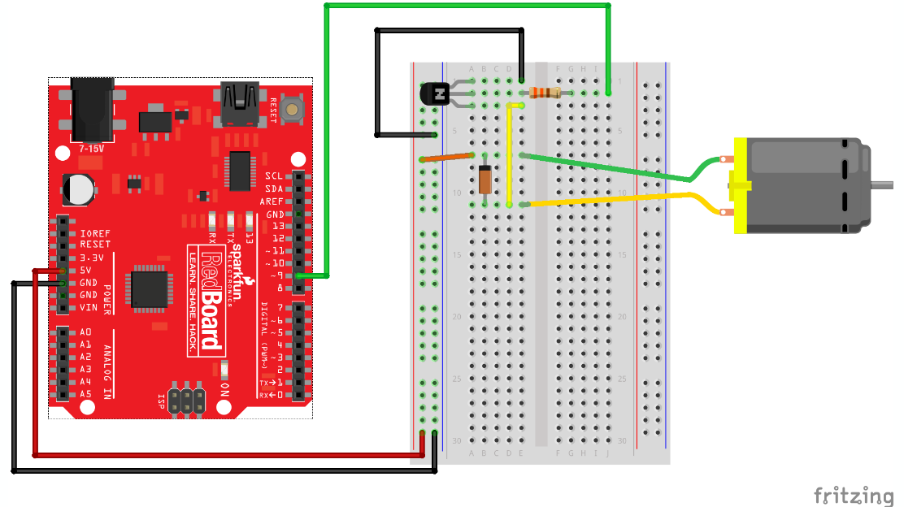

stupid pet trick
the greatest invention
of the 20th century
electromagnetism
creating voltage by moving a polarized metal through conductive wires

two features
transistors as switches
transistors as amplifiers
historically

transistors can forward information independent of voltage
anatomy - I

anatomy - II

back to dc motors

features of a motor
speed (RPM)
torque (N*m)
speed can be affected by voltage, but not torque
stepper motors
stepper motors use the same principle, but with nooks
high voltage
because transistors deal with higher voltage, you can hurt things!
that's why we use diodes
diodes

wire up a dc motor

assignment
make a project using dc motors and a diode